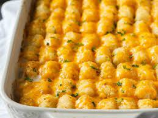

Tater Tot Casserol

Description
Layers of beef, cheese, veggies, and tater tots. An all time great comfort food. Maked ahead, it reheats well. Get creative and sub subsitute other types of potatoes or chickpeas.
Ingredients
- 1 bag of frozen tater tots
- 1 lb. of ground beef
- 4 cups shredded cheddar cheese
- Broccoli and cauliflower florets
Steps
- Brown ground beef in large skillet.
- In a greased casserole dish layer ground beef, cheese, vegtables, and tater tots.
- Bake at 350 for 1 hour covered.
- Remove cover and sprinkle cheese ontop of casserole. Bake uncovered for additional 15 minutes.
- Let rest 5 minutes before serving.